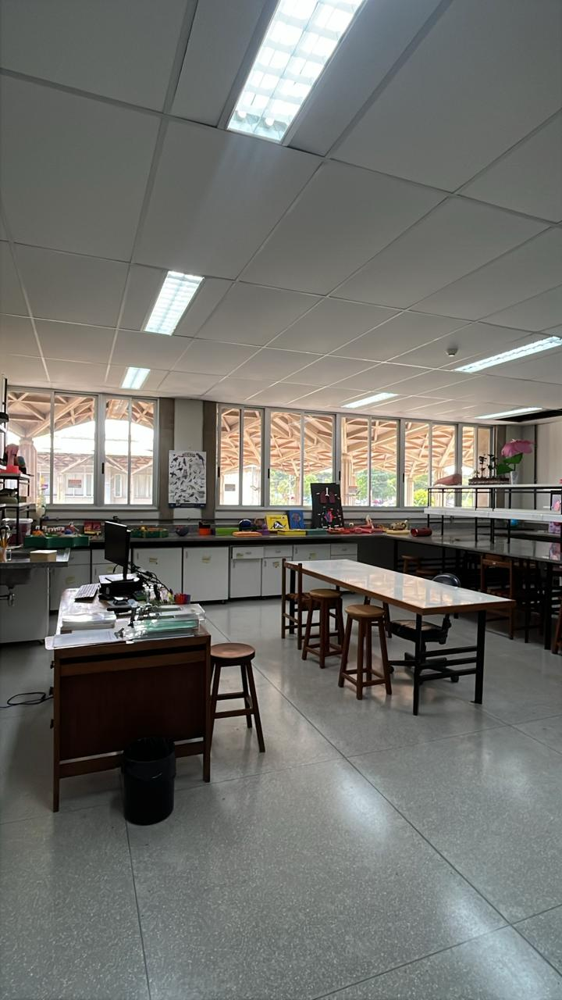
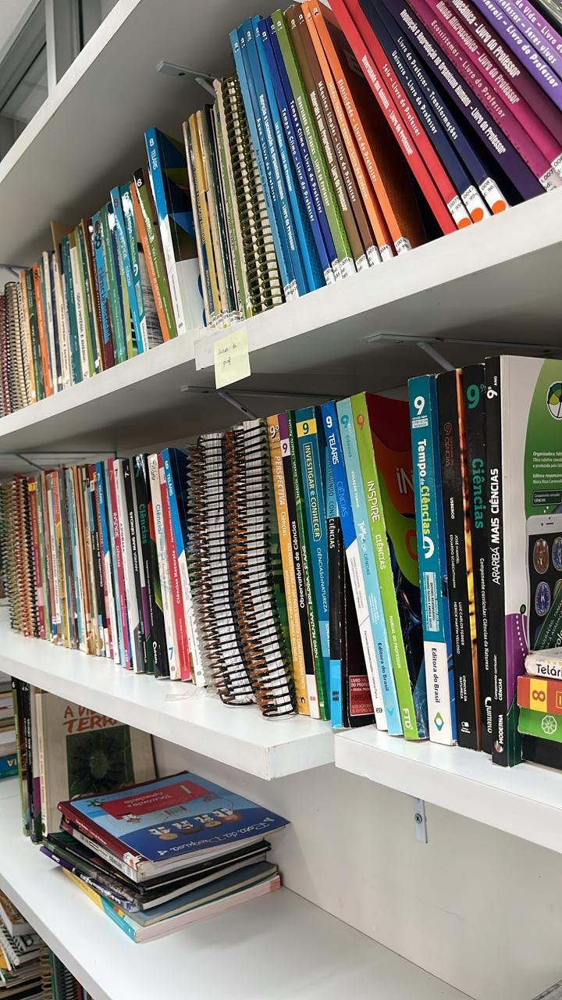
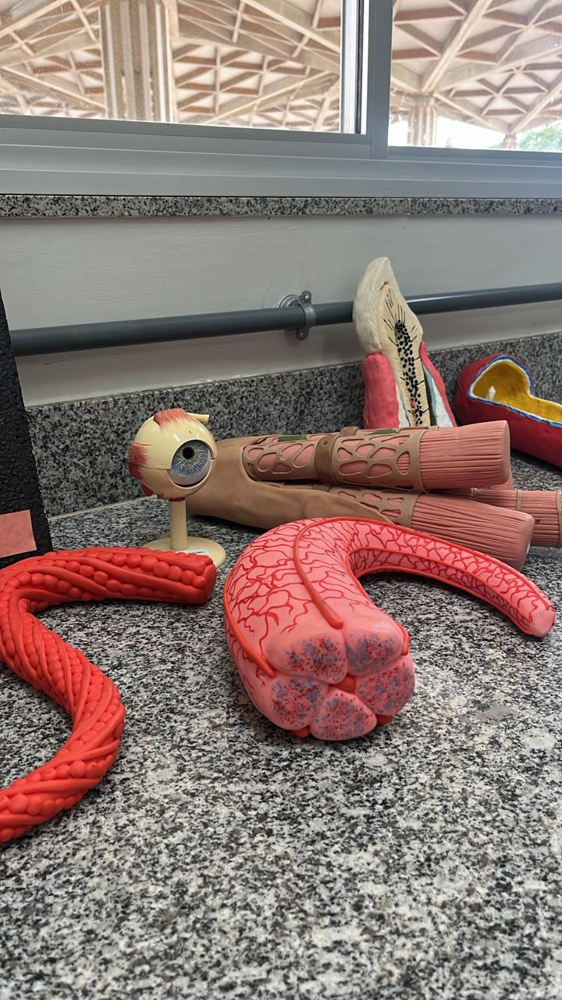

Laboratório de Ensino de Ciências e Cultura
Bem Vindo.



Bem Vindo.



O Laboratório de Ensino de Ciências e Cultura (LECC) é um laboratório multidisciplinar que oferece recursos didáticos para atividades e projetos tendo como principal objetivo dar subsídios para a formação de estudantes em Ciências Biológicas e promover atividades que contribuam para discussões sobre o ensino-aprendizagem de Ciências Naturais e Biologia. Além de atividades de Ensino de Ciências também apoiamos e realizamos ações Culturais.
Nosso Laboratório fica localizado dentro do NECBio, no Instituto de Ciências Biológicas da Universidade de Brasília (UnB), Campus Darcy Ribeiro (DF).